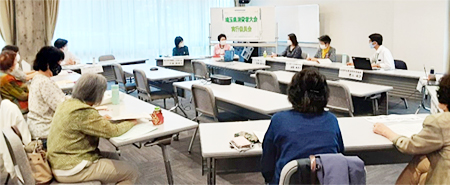

5月18日（火）10時30分より、埼玉会館ラウンジにて、第3回実行委員会をオンライン併用で開催し、15人（11団体）が出席しました。 ＊オンライン出席2人

【議題】
- 事務局長あいさつ
- 大会に向けた検討スケジュール…文書を確認しました
- 第2回実行委員会報告…文書を確認しました
- 大会スローガンと基調報告案（骨子）…情勢が読めない部分が多々あるが、夏から文章を出して意見をもらい、10月に確定していく予定
- 実行委員会体制について…県域団体からの副実行委員長について、こくみん共済 coopに引き受けていただきました。5月から正副実行委員長打ち合わせを行い、実行委員会に臨んでいます。
- 分科会・プレ学習会の開催について…分科会は農民連から「ゲノム編集と遺伝子組み換え農産物は安全なのか」をテーマに開催希望がありました。その他、団体の中での検討状況の報告があり、次回の実行委員会までに希望を集約し、どのテーマでどのようにおこなうか、決めていきます。1団体が運営するだけでなく、運営のサポート協力なども集約します。プレ学習会は、9月14日（火）に埼玉会館で開催、テーマは防災・減災について、埼玉県の施策を学ぶこととします。
- 学習するテーマについて…8月24日の県内消費者団体全体研修会のテーマは、「新型コロナウイルス感染症について」とします。講師や聞いてみたいことなど意見をお寄せください。
- 全体会記念講演について…テレビ朝日アナウンサーの山口豊さんに、引き受けていただきました。テーマは「循環型の地域社会づくり～再生可能エネルギーの取り組みから～」（仮）とし、今後調整をすすめ、また、YouTube配信やDVD作成について了承いただけるよう交渉します。
- みなさんからのご意見…確認しました
- 市町村における消費生活関連事業調査実施について…消費者大会実行委員会と埼玉消団連連名でおこなうことを確認。6月に調査項目を出すことを報告しました。若年層への対応、デジタル化の中での変化などについても聞いていく予定です。全国消団連が都道府県に行う調査とも連携しながらすすめていきます。消費生活相談員の処遇や現状について、意見交換しました。
|